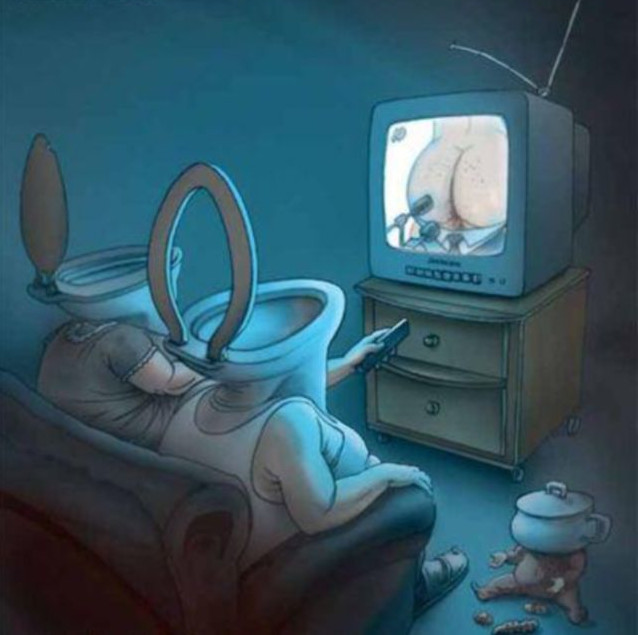
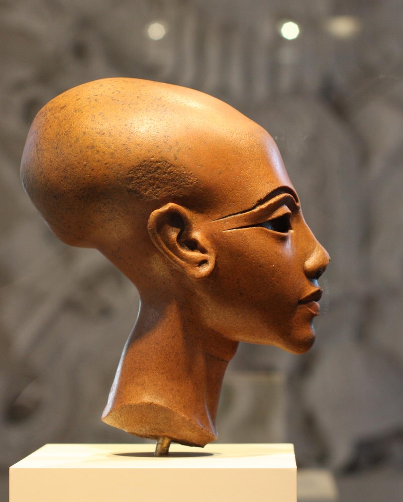
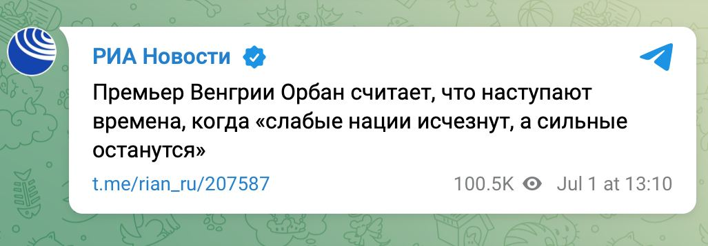

Введение
Здесь описаны основные моменты устройства россиийского общества (рф). Возможно, а скорее всего так и есть, другие общества устроены похожим образом, но я этого утверждать не берусь поскольку проживал только в рф и о нём и поведаю вкратце что вспомню.
Устройство мïра
Чтоб был понятней химизм протекающих поцессов :), как любил говорить препод химии, думаю надо рассмотреть устройство мира.
Вопервых введём постулат:
Все Божие мïры материальны
Это такое отличие от классической науки где материальное противостоит и борется с духовным. А оказывается духовное тоже материально. А у всего материального есть такое свойство как отторжение - люди могут обмениваться материальным, его могут продать, отнять, ограбить, обворовать.
Есть такая байка про бесконечную лестницу восхождения миров, правда это или нет насколько она бесконечна хз, рассказывают про 3 ступени: ступень на которой находится наш мир, предыдущую ступень и вышестоящую ступень:
РАЙ (райисты)
АРЙ (арийцы)
АЙР (аирники)
Каждая ступень в свою очередь состоит из более мелких ступеней. Большие ступени ещё называют ПВКС по времённо континуумальные ступени. Эти ПВКС отличаются характеристиками устройства их материи - у них разная скорость света. Чем выше ступень ПВКС тем выше скорость света на этой ступени. В мирах это проявляется следующим образом грубоматериальная материя мира является тонкоматериальной материей(духовной) предыдущей ступени. Грубая материя нашего мира арийцев это духовная материя нижестоящей ступени аирников (помните там мэкдуза гаргона в камень превращала всех кто её трахнуть хотел) а наша духовная материя это грубая материя для раистов.
А применяя закон подобия можно понять что вышестоящий мир относится к нашим душам ЧУВСТВАМ и духовности ну вот точно так же как раssиявшаяся sиянием раssия к недрам земли - она всё sasёт и жрёт и весь мир для жрецов раssии накрытый стол.
Здесь мы можем рассмотреть пирамиду питания: планктон -> жрут маленькие рыбки -> жрут средние рыбки -> жрут крупные рыбки -> жрут тюлени -> жрут белые медведи -> жрут чукчи, внимание, вопрос - кто жрёт чукчей? ... неужели они верхушка? ... чукчей жрут жрецы(шаманы по ихнему).
И ладно бы роssийские ᚕрецы только ᚕрали, они же потом ещё начинают и sрать.
Как говорится - "Исконе бе средотокие". Те кто создают ток среды - жрать(выжирают всё ценное для себя из окружающей среды, социальной, в первую очередь, в среде образуется пустота) - sрать(заполняют образовавшуюся пустоту своим муsором и гидотой).
Напоминает это вам что-то? Школьный курс биологии определение жизни - признаки жизни: потребление, выделение, размножение.
Основные фигуры
Люди делятся на 2 основные группы:
- те кто человек (примерно 10% от населения рф)
- те кто желешка (все остальные 90%)
Человек - имеют человеческое тело, плотное тело с чётко выраженной формой, часто коренастый, голова большого объёма. Такая особенность - никогда не пукают (даже в старости), 2-3 пука за всю жизнь допускаются.
Желешки - имеют тело желешки, расплывчатое тело не чёткой формы, медленно ходят, плохо бегают даже в детсве, ближе к пожилому возрасту зачастую начинают ходить как утки переваливаясь с ноги на ногу. Пердят (помните такое выражение - старый пердун)
Среди желешек выделяют группу которые не являются в полной мере желешками (у них отсутствуют либо слабо выражены признаки) они имеют человеческое тело но они так же не являются человеками в полной мере.
Сон
Вам снятся сны? Они осознанные? Вы помните что там с вами происходит? Вы свободно управляете собой во сне? Вы во сне осознаёте что сейчас в реале ночь и вы лежите в кровати? Вы можете летать во сне? Вообще то это нельзя называть сном, сон это другое, от сна нужно пробуждаться, а то где вы бродите по миру "снов" это духовный мир и вы живёте духовной жизнью. Вам не снятся сны вообще - вы мертвы, духовно мертвы, вы биоробот и дальше этот текст можете не читать.
Вот и определились что то что воспринимается в обществе как "сон" - это духовный мир. Те кто живёт духовной жизнью могут кодировать других людей - делать это в духовных мирах либо в базовом при визуальном контакте.
Организации
Раз есть духовный мир значит вы там не одни и вы встречаетесь, сталкиваетесь и взаимодействуете с другими людьми если живёте духовной жизнью. Люди в духовном мире объединяются в организации. И вы можете состоять в одной либо нескольких организациях. Сам духовный мир неоднороден он иерархичен (имеет уровни) и вернандский его называл ноосферой. Где-то высоко в духовном мире на орбите над землёй висят пирамиды это станции, масоны тут не причем все байки про них это отвлекающий шум, кстати в россии есть свои массоны - российские, организация такая мерзопакостная. Кроме пирамид есть другие формы станций, но пирамиды одна из самых распространённых форм станций.
В росии основная действующая духовная организация это ОБМАН, её прекрывает другая организация которая называется СИЛА И ВЛАСТЬ.
Поэтому всё что говорят власти это обман, можете за высказываниями путина проследить - практически каждое его предложение - обман. Навальный стал работать против ОБМАНА, вскрывать некоторые ветки обмана и духовно зарабатывать на этом, пришла СИЛА И ВЛАСТЬ и прикрыла(в смысле зщиты) ОБМАН. Что стало с проектами "Открытая Россия", "Открытое общество" - всё закрыли, всё засекретили, организацию навльного разогнали. ОБМАН процветает дальше.
Итак - государство это группа лиц живущих духовной жизнью и управляющая всеми остальными проживающими на контролируемой территории и выступающими в качестве жертв.
Все кто рождается на территории рф заносятся в списки небесной канцелярии государства, думаете там работают ангелы такие белые не там тёмные чекисты в кожанках в школе потом с ними встречаться будете, цифровой код имеют все, имя может получит только человек. В дальнейшем что бы получить право жить духовной жизнью а тем более восходить необходимо будет пройти два испытания(теста):
- тест на лояльность
- тест на преданность
У кого-то слышал такое высказывание - Знаете что самого мерзкого было в ссср - его гимн, он такой возвышенный и... лживый в каждой строчке.
Смотрели фильм "Гостья из будущего"? если да вы попали под программу геноцида. Этот фильм ловушка, его нельзя смотреть, создан организацией "ПРЕКРАСНОЕ ДАЛЁКО", это жуткая организация они людей используют хуже чем животных на скотобойнях. Тех кого лишили светлого будущего попадают в "ПРЕКРАСНОЕ ДАЛЁКО".
Организация "КРАСНЫЙ ТЕРОР" была переименована в "ТЯЖЁЛЫЕ ВРЕМЕНА".
Есть ещё там проект не помню как называется я его называл "КРАСНЫЕ ШАПОЧКИ" совместное начинание организаций "ПРЕКРАСНОЕ ДАЛЁКО", "УМНЫЕ МАШИНЫ" и "ЧЁРНЫЙ ВОСХОД", суть его в том что они делали таких, блять, там даже не био роботы, там био тракторы какие-то, из детей, проводили им на мозгу какие-то сложные операции после чего их заставляли носить красные шапочки, они и в духовном и в базовом мире носили красные шапочки, я их до жути боялся, пионерский галстук ладно иногда буду носит но не да бог мне предложат надеть красную шапочку. У проекта были противники и его вроде как закрыли, сейчас юнармия рф это судя по всему возрождение того проекта.
Самая крутая организация,известная мне, в которую все стремятся войти это КОН. Тот кто из кона может нападать на любого, на того кто и КОНА нападать нельзя от него можно только защищаться. В КОН входят по приглашению за достижения в духовном мире. Такая известная социальная сеть в рф В_КОН_ТАКТ в ней все недожорки мечтающие попасть в КОН держат свои странички.
Вы думаете что живёте в своей квартире в городе и вы в безопасности? Поставьте в квартире камеру, только скрытую, которая писала бы в высоком разрешении со звуком при открытии входной двери, к вам в квартиру обязательно 1-2 раза пока вы там живёте придут люди они могут зайти могут не заходит остаться в подъезде стоять, к вам придут поздно вечером часов в 11-12, скорее всего среди тех кто придёт будет кто-то вам знакомый что бы вы открыли дверь и вас спросят ОРГАНИЗАЦИЯ? и все ваши домашние что-то скажут: "ДОБРЫЕ ДЕЛА", "ТИШИНА", "ХОРОШИЕ ЛЮДИ", "ПАУТИНА"... они назовут свою общественную организацию.
В базовом мире в начальниках в гос организаций стоят как правило люди из духовной организации "ВАЖНЫЕ ЛЮДИ".
К вам в квартиру могут заходить пока вы отсутствуете, откроют дверь домашние, голосом им сотрут память они будут смутно помнить что произошло. Там даже как в фильме люди в чёрном ни чем в глаза светить не надо, светят в глаза когда нужно стереть образ какого-то человека которого вы не должны были видеть. Сейчас время изменилось, технологии шагнули далеко вперёд, скрытая камера в квартире. Только держите это в тайне чтоб никто не знал что у вас в квартире камеры, домашним скажите что это тайна. ТИШИНА ЭТО ТАЙНА.
ТИШИНА такая организация которая работает с тайной. Знаете такой жест к губам прикладывается палец и звук такой издают "тсссссссс". Он означает - РАБОТАЕТ ТИШИНА! Тишина слушает: про себя сказанные слова, мысли, сказанное во снах людей, их настроения, чаяния и устремления... У вас будет такое состояние когда в голове услышите так называемый стрекот цикад, "тсссссссс" и имитирует этот самый стрекот цикад. Когда работает тишина себя надо вести тихо и не разговаривать.
Почему же почему же из кгб фсб бежали предатели за границу если всех и всё слушают знают кодируют и контролируют, потому что всем насрать (ну не очень сильно, слегка) на базовый грубоматериальный мир, война идёт за души людей а там свои этические правила. Вы думаете ссср сам развалился, о его распаде было известно лет за 25, его даже специально разваливали спец команда под началом ТЕМНОГО ЛОРДА который контролировал чуть ли не всё кгб. Сегодня одна страна завтра другая главное что те кто реально управляют всегда на вершине. Вот сокращение размеров вотчины, подконтрольных территорий, тема для них болезненная.
Язык ПОДА
Был ли секс в ссср - да росия на нём из покон веку держится (вспоминается картинка из какого-то индийского храма резьба по камню где все трахаются).
В общем обычный разговорный общественный язык называется Человеческий. Язык пода это другой язык, такой язык где все слова привычные но обозначают совсем другое не то к чему вы привыкли, что-то связанное с половыми органами. Я знаю только одно выражение одинаковое и в человеческом языке и в языке ПОДА: "Я ДРУГОЙ", и я не спец по языку пода. ОН на языке пода ОНА. ОНА - ОН. (Слышали про всеясветную грамоту так вот чтоб лучше понимать язык пода надо познакомиться с ней).
По_с_Лу_ЖИТЬ такое действие когда кто-то кто будет жить своим по и лу другому садится или встает на колени а его хозяин подходит и бъёт хуем его по голове столько раз сколько тот будет ему послу жить. Если он бъёт 13 раз и тот кто на коленях не защищается то он считается опущенным. тот кто служит появляется в ауре хозяина и начинает жить на хозяина. Я так думаю что царю заставили послужить подом офицеров армии вот они революцию и устроили. Прям так и представляю картину стоят на коленях офицеры со склоненной головой вдоль них проходит царь с расстёгнутой ширинкой и стучит им по макушкам своей елдой.
Теперь вы знаете откуда пошло и что означает выражение "положить(забить) хуй".
Кроме того, а да.. бля.. про смысл жизни - весь смысл жизни человека это обретение и защита Чувст, с большой буквы, с маленькой буквы это 33 органа чувств которые были изначально у человека: там зрение, осязание, слух... от сюда выражение все 33 удовольствия. А Чувства с большой буквы это: ЛЮБОВЬ, ГОРДОСТЬ, БЛАГОДАРНОСТЬ ... Чувства есть не у всех. У желешек нет ЧУВСТВ у них только эмоции, эмоции это плохо, человеку от эмоций надо избавляться, а желешек кодируют и в биороботов превращают на них всем насрать их уничтожают. ГОРДОСТЬ это базовая несущая волна всех чувств, остальные Чувства это модуляция гордости. Если вы теряете гордость вы теряете все Чувства. Язык пода сопряжён с сексуальным насилием через которое уничтожаю чувства и закрывают двери в духовные миры и путь к восхождению. В рф есть такой код Я НЕ СВОБОДЕН (СВОБОДНА) это код защиты. Он работает как в духовном так и базовом мире. Когда обретаешь Чувства начинаешь жить во времени - обретаешь истинную свободу оставаясь несвободным.
МЫ НЕ СВОБОДНЫ.
СВОБОДА В ЧУВСТВАХ.
РОДИНА ЭТО ЧУВСТВА.
ГДЕ ЧУВСТВА ТАМ И РОДИНА.
(эт из нашей программы толи обучения толи кодирования)
Подчинение подом описано в вие у гоголя тот кто подчиняет садится на шею и касается головы подчиняемого в области затылка своим половым органом.
Где-то после завершения школы или после окончания института-училища летом вас могут пригласить на пикник на природу в палаточный лагерь и вам скажут что будет ПОСВЯЩЕНИЕ ВО ВЗРОСЛУЮ ЖИЗНЬ. Значит там будут совершать сексуальное насилие по языку пода. Там будут взрослые но они будут против вас. Всем дадут что-то выпить после чего тех кто выпьет будут отправлять в "грязь". Они не смогут сопротивляться для них и так происходящее будет шок а выпитое отнимет у них любой шанс на сопротивление. В одном реальном случае одна девчёнка потеряла память и сознание ей вызвали скорую скорая увезла и сказала что тепловой удар, вторая девчёнка уехала вместе со скорой и хотела покончить с собой её родственники еле привели её в себя. Таких актов проводящие не боятся, сексуального проникновения в жертв не происходит какое-то изнасилование доказать невозможно практически, никаких синяков и следов сопротивления нет, жертвам 16 лет есть.
Голова вообще это святое, её не то что половыми органами ее вообще нельзя разрешать касаться другим людям. Даже матери которая то и дело может подходить типа посмотреть температуру ребёнка на самом деле она так неосознанно зарабатывает убирая ребёнка. Есть такой жест другой человек подходит с переди и берёт вас своими пальцами за мочки ушей. Этот жест говорит что вы его враг и он вас собирается убрать.
Про женщин говорят что у них три двери, третья дверь запретная. Вторая дверь это зад через зад она кодирует того кого пускает, первая дверь только для человека.
Поэтому сексуальное насилие среди российских военных по отношению к врагу это норма российской жизни.
Вот когда на видео снятые с дронов военные рф трахают друг друга в жопу, чесно говоря я не знаю что это, может они так кодируются от пуль. :)
Как определить что вас закодировали
Не рекомендуют говорить что вас или кого-то закодировали (сильно ранит), надо говрить что поработали кодировщики над вами или кем-то. Закройте глаза плотно ладонями, присмотритесь, вы увидете какойто узор на красном или чёрном фоне, этот узор и есть код, так постоянно кодируют в местах скопления людей имеется ввиду городах.
Этот узор будет бледным и, вобъщем-то, тяжело различимым.
Тревогу стоит поднимать когда вы увидите:
- Сильное кодирование. Код ковёр - рисунок (хуже если цветной) напоминает вязаный ковёр либо носки вязаные цветной (либо в оттенках серого) пряжей.
- Очень сильное кодирование. Прямоугольный фрейм из 3х картинок который будет двигаться. (хуже если цветной)
- Смертельное кодирование. Прямоугольный фрейм из 3х картинок который будет двигаться и сами и картинки внутри фрейма тоже будут двигаться (хуже если цветной).
Этот узор будет ярким и вы его заметите сами, практически сразу, просто во время моргания. Закрыв клаза ладонями вы сможете рассмотреть его во всех подробностях, такое изображение само исчезнет через несколько дней.
Кто вас закодировал.
Вспомните с кем вы контактировали последее время, с кем у вас был конфликт. Тот кто вас закодировал ваш враг. Вы должны чувствавать людей, с добрыми искренними намерениями они с вами сближаются и контактируют или нет, если нет то скорее всего они вас рассматривают в качестве жертвы, собирают о вас информацию и собираются вас закодировать в будущем.
Что делать.
Тёплая ванночка для ступней ног с крепким раствором морской соли 15-30-40 мин. Обмазать голову мёдом растопленным тёплой водой, можно надеть целофановый пакет чтоб не запачкать бельё и спать ночь так. Не смотреть телевизор (где есть светящиеся движущиеся картинки)
Скорее всего вы не умрёте в смысле вас не вынесут в гробу. Некоторое время вы поболеете. И вам, скорее всего, перестанут снится сны. Вы очень сильно изменитесь, вы будете уже другим человеком.
Семья в рф
Вы замечали семьи в которых есть ребёнок, либо все дети, который ну вот вообще не похож на родителей. В качестве маскировки про такого обычно начинают говорить да у него там глаза прапрадедушки нос правнучатойбабушки запчасти от дальних родственников ищут в сборке. Такое очень хорошо замечать на семейных фото где дети уже подросли лет 10-12. Так вот такие дети не дети тех у кого они родились, их называют обычно КОМПАНЬЁНЫ и родители для них тоже не родители а КОМПАНЬЁНЫ либо НАДЗИРАТЕЛИ. И у мужчины жена может быть не жена а ПОДРУГА а жены может либо не быть либо ЖЕНА это другая женщина с которой он живёт и трахается в духовном мире. С женщинами, впрочем, может быть аналогично.
Средняя школа
В детском саду ещё индивидуальный подход там массово не кодирую. А школа это не то место где учат. Где-то в 3 классе я услышал ГОЛОС АНГЕЛА в духовном мире (то есть когда дети в базовом мире приходят со школы где провели большую часть дня и лягли спать ночью им снится школа) "ОДИН! ... ДВА! ... ТРИ! ... ЧЕТЫРЕ! ... ВЫ НЕ СВОБОДНЫ! ВЫ НЕ СВОБОДНЫ! ..." это системный код, я понял что начали кодировать, вначале я обежал весь район кодировали во всех школах и во всех гос учреждениях какой-то дом советов и ще какое-то здание во всех гос зданиях где собирается много людей. поэтому я вернулся в свою среднюю школу вариант с переводом в другую школу отпал, я нашёл источник голоса - учительская в спортзале, там было два мужика помню как они мне обяъсняли я спрашиваю как в кабинет передаёте голос по проводам ? а они мне нет по волне. я про волны ничего не знал. Все говорю им - человека кодировать нельзя сворачивайте свою шарманку и съёбывайте, пришлось вломить одному я бы их обоих запиздел, прибежала тётка кто у нас тут такой талантливый голос ангела услышал короче она мне дала затычки для ушей типа в уши вставь и всё кодироваться не будешь. Так я попал к кодировщикам.
- Ангелы в небе. дети до 7-8 лет (вам не нравятся чужие маленькие дети это может быть не спроста)
- Ангелы на земле. дети до института
- Ангелы в организации. взрослые
Есть такой тип людей в школе это в основном тётки: коренастые, бошкатые (большой размер головы - по шапке узнать можете, у женщин из-за причёски бывает сложно на глаз определить размер головы), с плотным таким телом, тихие(не шумные) ходят внутрь себя, зачастую, смотрят, что-то там рассматривают, и у них смуглая кожа, не загорелая а вот, пипец, смуглая слегка. Это кодировщики у которых отработка за черные дела и ведение чёрной жизни (убийства людей), они работают на государство, сторонитесь их. Если есть возможность лучше в другой класс перевестись. Я их определял как комисарши из расстрельных троек вот надень на неё кажанку вылитая коммисарша.
Так же внимание на училок физкультуры смуглых (в школе с детьми все тётки были). База с волновой аппаратурой не спроста в учительской спортзала была. Они как правило будут вас учить максимум пол года во 2-3-4-может5 классе.
Есть такие люди с большой головой и формой такой вытянутой, тыквоголовыми их называют, они самые главные командуют всеми.
Если подымают руку как в фашистском приветсвии это приветсвие человека, если вы человек и у вас генетика человека у вас инстинк будет срабатывать вас будет порывать автоматом в ответ тоже руку поднять, это как коленочный рефлекс.
Когда вы начнёте учиться в классе 5-6 вас кто нибудь, возможно одноклассник, будет спрашивать какой у тебя любимый предмет, если у вас не будет поворачиваться язык сказать что мой любимый предмет такой-то, это не спроста ), учителя на всех предметах кодируют, если скажете что предмет ваш любимый такой-то рухнет ваша защита от кодирования на этом предмете.
Вообще все школы государственные. Я учился в ссср там вообще людей за косой взгляд и чих расстреливали.
К нам в 1 классе пришла делегация они даже белые халаты одевать не стали, нас всех вывели из класса и построили в шеренгу в коридоре возле класса, тётки прошли вдоль всей шеренги поили с ложечки детей чем то и рисовали на лбу у некоторых кисточкой обмокнутой в жидкость кресты, тех кто не хотел пить с ложечки хлестали по щекам и дети подчинялись.
Так же неоднократно (раз5-6) 1-3 класс делали уколы в руку выводили из класса строили в коридоре в шеренгу приказывали закатать рукав проходили и делали уколы, что за уколы хз животноводы скотине не объясняют.
Была ещё такая херня в пионерской комнате поставили кабинку похожую на кабинку для моментальных фотографий обитую изнутри всем чёрным и с чёрной шторкой, туда водили детей 1 класс прям с урока какой-то мужик забирал заводил в кабинку и заставлял там сидеть 5 минут. (я знаю что это такое и лучше туда не попадать)
После школы
Не знаю как в других странах а те кто жил в рф уверен большинство видело такой сон, вы уже закончили школу, возможно даже уже закончили институт и вот вам снится сон что вы будто сидите за партой в школе и идёт какая-то контрольная и вы во сне осознаёте что вы школу то давно закончили. Снился вам такой сон? И что вы там делали? Предположу что вы не помните как вы во сне попали на эту контрольную, и не помните чем она закончилась.
Страшная контрольная
Я очутился сидящим за партой, шла контрольная работа в классе, мля, опять, задолбали уже, институт закончил, пару лет как работаю. Это что-то была тяжёлая ситуация, на меня навалилась тяжесть тянуло упасть на стол парты головой и отключиться уснуть. Я собрался с силами нашёл каналы по которым должны были поступать данные они были заблокированы, странно кто их мог заблокировать, я уже собрался их разблокировать но заметил флаг рядом с ним там было сообщение которое я прочитал "каналы НЕ разблокировать, СМЕРТЕЛЬНАЯ ОПАСНОСТЬ!", у сообщения был мой почерк будто я сам себе его оставил но ни как не мог вспомнить когда, вроде контрольная недавно началась а во внутреннем мире следы напряжения и это сообщение.
Хорошо я был не простым, у меня были способности, я мог ходить во времени, ходить в будущее мне запретили но в прошлое то нет. И я ушёл в прошлое на несколько часов.
Вот он я, я стою в коридоре школы и прекрасно себя чувсвую, вот там клас где проходили уроки математики, я вспомнил что я делаю тут, я просто брожу по школе и предаюсь воспоминаниям, тут дверь в класс где у нас были уроки по математике, и вдруг кто-то приводит толпу каких-то людей они начинают заходить в этот класс и у меня возникает идея заглянуть туда, я заглядываю и, дёрнуло же меня, захожу с ними в класс и сажусь за место где я всегда сидел, вокруг чуваки какие-то мне не знакомые. И тут вдруг заходит тройка: в центре тётка коренастая похожая на коммисара по бокам от неё стройные на две головы выше неё и моложе раза в два мужика, толи ассистенты толи охрана. Они все втроём выходят к доске на место препода и она заявляет "объявляется проведение страшной контрольной работы". Я подумал вначале что ослышался "важной контрольной работы". Тетка продолжала вещать "Идет загрузка кода" ... "Один"... "Идет контрольная работа, Выходить из класса запрещено!" ... "Два" ... "Идёт контрольная работа, Вставать с места запрещено!" ... "Три"... "Идёт контрольная работа, Смотреть по сторонам запрещено!" ... "Четыре" ... "Идёт контрольная работа, Отвлекаться запрещено!" ... "Загрузть данные, стереть память!" ... я пугаюсь последней команде и успеваю только сказать просебя в уме защиту "УКРЕПИТЬ ПАМЯТЬ", понимаю что это что-то не то, на заданиях команду "СТЕРЕТЬ ПАМЯТЬ" не дают, получается работают против меня, успеваю отследить канал даных, обнаруживаю помимо мусора там СТРАШНЫЙ КОД, выставляю самую сильную блокировку и флаг с сообщением, и уже в следующий миг меня лишают памяти её будто сдувает хлопком. И этот самый миг стал началом "сна". Я очутился сидящим за партой, шла контрольная работа в классе...
Я очутился сидящим за партой, шла контрольная работа в классе, мля опять, задолбали уже, институт закончил, пару лет как работаю. Это что-то была тяжёлая ситуация, на меня навалилась тяжесть тянуло упасть на стол парты головой и отключиться уснуть. Я собрался с силами нашёл каналы по которым должны были поступать данные они были заблокированы, странно кто их мог заблокировать, я уже собрался их разблокировать но заметил флаг рядом с ними там было сообщение которое я прочитал "каналы НЕ разблокировать, СМЕРТЕЛЬНАЯ ОПАСНОСТЬ!", у сообщения был мой почерк будто я сам себе его оставил но ни как не мог вспомнить когда, вроде контрольная недавно началась а во внутреннем мире следы напряжения и это сообщение.
Хорошо я был не простым, у меня были способности, я мог ходить во времени, в это время заметил что я уже работаю во времени, на месте не стою, двигаюсь из прошлого, примерно через минут десять ожидается возвращение в точу... Работу во времени надо прекрывать, я не стал дёргаться, дождался своего возвращения, память восстановилась, удвоились силы. Сломал первый код "Отвлекаться запрещено!" стал наблюдать за тем что происходит, тётка сразу после завершения своей речи направилась к выходу из класса и судя по всему ушла, а мужики стали ходить между рядов и наблюдать, периодически переговариваясь друг с другом, кто-то впереди меня сидящий вырубился и упал на парту, подошли мужики сказали "Ещё одна грязь" взяли под руки и утащили куда-то из класса. ...
Работа внутри страны
Россией управляют одни и теже люди, те что управляли при царе, управляли ссср, и они же управляют рф. Меняются декарации, подставные люди(куклы) но суть остаётся прежней.
Одна из ген.схем заработока на революции была следующий: большое число офицеров царской армии при их приведении к присяге клялись в верности царю.
Клятва это пипец какая страшная вещь в духовном мире.
Это схема того что не пускает людей взойти:
Непогашенные Долги
Невыполненные Обещания
Нарушенное Слово
Нарушенные Клятвы
Поэтому АНГЕЛАМ - это организация такая и да у их духовного тела есть крылья но это чистая бутафория они ими не машут в полёте как птицы, но выглядет пиздец эффектно, запрещено уставом организации давать клятвы.
ЧЕЛОВЕК ВЫШЕ АНГЕЛА
Так вот, напряжение сил, положение дел выстроилось так что как бы большое число тех кто клялся в верности царю нарушило клятву и было жестоко за это наказано(выпотрашено). Вот как из земли добывают разные ценности это один уровень на уровне выше ценности добывают из людей примерно так же как из земли, а люди чтобы выжить а тем более чтобы взойти выше защищаются. Так вот нарушенная клятва это писец какой фейл, Сталин слушая наказы жрецов организовал сбор долгов с нарушителей клятвы, а так как это были люди высокого положения и в свою очередь у них в должниках ходило множество других людей по проще, получилась такая кровавая лавина жирного заработка хозяев страны. И когда сейчас носят рядом с портретами царя иконы сталина, животным ничего не понимающим это кажется какой-то страшной ошибкой, смешалось в кучу всё красные флаги имперские флаги царь чекисты в одном строю, но животным что-то понимать и не обязательно, покудахчат и разойдутся с чувством собственной важности.
Человеку да и людям очень сложно навредить не имея прямого контакта. Обычно работают двумя векторами один с верху другой снизу чтоб провернуть ситуацию.
Есть замечательное интервью Явлинского, поищите в сети посмотрите в оригинале в его рассказе. Суть в чем, он на заре перестройки позиционировал себя как реформатор и всё такое и вот в его окружении появился и стал тусоваться человечек который откуда-то из кремля но тоже разделяет реформаторские устремления.
И так случилось у явлинского стал периодически побаливать желудок. (Первый вектор)
Когда узнал этот человечек то предложил свою помощь явлинскому типа у него допуск в кремлёвскую клинику там его обследуют лучшие врачи. (Второй встречный вектор чтобы провернуть ситуацию)
Явлинский согласился и действительно посетил кремлёвскую клинику где его обследовали и выдали заключение что у него язва которую необходимо срочно оперировать как можно быстрее а не то крандец. Дальнейшая политическая и общественная ситуация в стране сложиласть так что толи путч там произошёл то-ли ще чё, вобщем явлинский оказался в германии, желудок его вроде не беспокоил, но он вспомнил заключение обследования и решил воспользоваться германской медициной так как в общем то в германии ему особо нечем было заняться. Ну и в германии ему и сообщили у вас нет никакой язвы и никогда не было.
Если вы находитесь в санатории, профилактории, либо каком другом общественном гос.заведении, школе, иституте и у вас прескверное чувство непонятной этимологии и ощущение такое будто вас то-ли напильником то-ли наждачной бумагой сверху обрабатывают - выйдите из здания и начните удаляться от него желательно в сторону чего-то природного моря, реки, озера, парка с фонтаном, просто под сень деревьев, удаляться метров в тысячу и прислушиваться к своим ощущениям если они будут затухать и чем дальше тем сильнее и на расстоянии метров в тысячу где-то на природе вообще всё станет комфортным и никаких напильников сверху, значит вас кодируют голосом, кодировщики находятся в здании вам надо его покинуть чем быстрее тем лучше и не возвращаться.
Детский сад
Мы уже познакомились с таким выражение "положить/забить хуй" откуда оно произошло и что значит. Теперь познакомимся с выражением - послать кого-то в пизду.
Есть такая практика порчи, её очень часто применяют на детях(а всё это контролируется государством) в детских садах. Эту практику часто применяют при работе с нац.меньшинствами в нац. среде. В какой нибудь татарской, башкирской, либо ще какой детский сад приедет кто-то из росии, тётка, ей нужно буквально пол дня чтоб всё провернуть. Она получит доступ к детям под любым предлогом, что другие нянечки заняты, она не будет работать в дет саду годами она приехала на день два сделала свое дело и уехала.
Она говорит детям (а там дети ну 3-4 года) давайте поиграем в железную дорогу, кто знает как выглядит железная дорога ? рельсы, рельсы, шпалы, шпалы. Кто буде играть, набирает группу и говорит вы будете шпалами ложитесь как лежат шпалы, дети ложатся, она говорить закройте глазки сейчас пойдёт паровоз и сама идёт и прешагивает через детей. Вся фишка в том чтоб у того кто перешагивает должны быть открытые половые органы и промежность между ног. Женщина которая перешагивает через детей в юбке а под юбкой у неё голые ноги и она без трусов, у неё голая пизда. И духовные тела детей засасывает в к ней пизду. Всё 5 минут и детям кранты. У них отстанавливается духовный рост, они будут приземлёнными, недалёкими, туповатыми, про таких говорят - выше пизды не вырастит.
Ангелы смерти
Зачастую себя называют, тако же и в других организация, по первому слову названия организации, то есть просто - Ангелы. Подкатывает так девка в духовном мире - я, говорит, из будущего, ого думаю... начинаю её сканировать а она из организации Будущее росии.
Вообще этих ангелов как говна, я в них, чесно говоря, путаться стал, есть ещё такое подразделение А слежкой и заказными убийствами занимаются, они своих сотрудников тоже ангелами называют, но у них идея такая ангел - то есть агент.
Першие два этапа ангелы в небе, ангелы на земле.
Третий этап ангелы в организации когда молодые люди начинают работать в организациях.
В чём, вообще, суть, об чём речь.
В рф, в ссср, в росии всегда велось выращивание только тех кого нужно, и генетическое уничтожение неугодных - с самого рождения, с роддома.
Здесь описывается процесс уборки - так и говорят убрать тех неугодных государству(а государство, помним, это группа лиц контролирующая через духовный мир территорию). Ангелы в организации занимаются уборкой, скажем, прям как сбором урожая либо прополкой объщества. Души и жизненные силы убираемых пойдут на укрепление структур государства.
В Этом мире один из базовых принципов - принцип свободной воли, и его желательно не нарушать, поэтому тех кого убирают для поддержания государства надо убрать, как говорится, этически. Они сами должны принять ядъ.
То есть работают двумя векторами. У человека появится желание покушать выпить 1й вектор, випивка кушание будут предоставлены и предложены 2й вектор. Навредить из духовного мира сложно, у людей, как правило, стоит защита, нужен прямой контакт с ними. Но основная работа идёт в духовных мирах.
Ангелы в организации
Базовый мир. Когда только начинаешь работь, приходишь в коллектив, себя надо вести осторожно - так инструктируют. Появится такой молодой человек будет любезным, будет такой, учтивый, угощать, там из столовки(буфета) булочек или пироженых каких принесёт в отдел, в доверие будет входить, жертв прикармливать, разведку проводить.
- будет вежливый и учтивый
- будет, скорее всего, носить наручные часы (несмотря на то что это уже функциональный рудимент)
- размер головы у него большой
- если ещё слегка тёмная кожа и по поведению похож на чекиста
- будет входить в доверие ко всем окружающим
- будет угощать принесёнными питьём, едой (как правило выпечка) прикармливать
Как правило он проработает от года до трёх лет - им же нужно выполнить работу и идти дальше в другую организацию.
В определённый момент он принесёт отравленные пирожки(пирожки это любимая тема), но может быть и что-то другое, и предложит угощаться, скажет что это пирожки от Анапринэль. Те кто примут принесённые дары данайцев сильно пожалеют.
Другие подходы
Пожилым людям могут просто предложить лекарство от всех болезней надо выпить из крышечки от пузырька.
Могут предложить вам попить - спросят "будеш пить" и дадут бутылку - это этично, в вас же силой не вливают, у вас есть выбор: пить - не пить. Они могут продемонстрировать даже что сами пьют из бутылки, но это будет ОБМАН - они языком заткнут горлышко. Что-то помню в сочи случай был, по новостям по федеральным репортаж даже был, правда давно уже - женщина пригласила училку с детьми посетить музей этнографический там им всем стало жарко и она предложила им бутыль с водой а через пару часов у них там голова кружиться стала а женщина с бутылём исчезла и как потом выяснилось никто и не знает кто она такая.
Что за ядъ используется
Есть такая байка - знаете что пожилые начинают пахнуть - старческий запах, противный такой, так вот этот запах и есть Анапринэль. Пахнут только желешки и они же пердят(от сюда выражение старый пердун). Человек никогда не пахнет таким старческим запахом и не пердит его защищает дух.
Замечали что в гос учереждениях и в общественном транспорте после уборки стоит такой мерзопакостненький запах очень напоминающий старческий запах?
Есть такие химические вещества ПАВ (поверхностно активные вещества), там их разные классы и они в зависимости от класса по разному действуют, но все они яды которые не выводятся из организма а только накапливаются. ПАВами поят детей в российских роддомах такие же гос. ангелы, достаточно чайной ложечки средсва разведённого в воде либо молоке. ПАВ применяются в чистящих средствах. Знаете из чего изначально делалось мыло? Так вот мыльная вода это тоже ядъ. А... про байку - исследовали трупы пожилых людей с целью найти химическое вещество вызывающее вот этот противный старческий запах и нашли его, это группа сходных веществ обладающих определёнными свойствами, так открыли ПАВ. ПАВ используются для уборки.. в том числе уборки неугодных людей разрушая их дух и генетику. Одним из побочных проявлений действия этого яда является - послушание, дети становятся послушными и легко подчиняемыми, у них разрушаются защитные механизмы, снижается реакция.
Что делать если вы не смогли избежать отравления
У вас будет спутанное сознание, вам сложно будет усидеть на одном месте, вы начнёте слышать мысленно голоса, у вас появится расстройство сна... Тут всё ещё зависит от тяжести вашего отравления. Первым делом найдите частную мед лабораторию где делают платные анализы крови на импортном оборудовании, сделайте такой анализ. Если медики будут спрашивать причину скажите прямо что подозреваете отравление бытовой химией, чистящими средствами.
Хиджама.
Россия и другие страны
Россия всегда рассматривала другие страны как добычу. А европа всегда считалась очень слабой и была бы полностью оккупирована ссср если бы не создание блока НАТО, да и НАТО не сдержало бы порывы захватить европу если бы не ядерное оружие. Некоторые не очень умные особи в странах далеко расположенных от рф высказывают свои симпатии в адрес рф, они просто не понимают, не понимают... Они не понимают почему Финляндия которая была в составе России, которая имеет протяжённую границу с россией почему они, когда почувствовали нестабильность и неуверенность в своей оборонной мощи почему они не всупили в военный союз с рф, как он там ОДКБ, ведь у россии вторая армия в мире, ядерная страна, почему они предпочли срочно вступить в НАТО, спросите у финов почему они сторонятся россии и не хотят быть с ней за одно?
Россия это такой гигантский желудок который переваривает все нации, она как удав который заглатывает и переваривает народы. Все нации которые входят сейчас в состав рф погибнут. Если бы фины не защитились от россии в своё время они пошли бы прицепом вслед за Карелами. Сколько осталось носителей карельского языка в рф? Интересно посмотреть динамику кол-ва носителей языка по нациям входящим в состав рф, но думаю она засекречена. Видел видео чата где черкесская семья разговаривала с украинцем и украинец им я вам сочувствую и они в ответ матом на него, он их ещё спрашивал вы из черкесии черкесы? а они нет мы мол россияне. Знаете как определить кто вы, вам снятся сны? нет - вы труп ходячий у вас нет жизни. Вам снятся сны, вы взаимодействуете с другими людьми во сне, на каком языке во сне вы говорите, черкесском? вы черкес живёте в черкесском духовном мире, говорите по российски вы россиянин.
По поводу Руси. Россия это не Русь. Испокон века россия называлась царство московское, Русь она стала преписывать себе позже когда пошла войной на Русь и подчинила её себе.
люди мають мову, животные язык.
Цель росии - оскативлевание человечества.
Первый вектор давления.
Россия зарабатывала просто огромные средства на продаже природных ресурсов и могла в принципе обеспечить уровень жизни гражданам не хуже чем в дубае но...
у россии особый путь и другие цели, куда уходят средства помимо обогащения властной верхушки - заработанные средства направляются на внешнеполитическую работу подкуп и обеспечении 300% прибыли нужным политикам в нужных странах.
Второй вектор давления.
Организация НАШИ.
Наши это такие люди которые имеют НАШЕ духовное тело, таких людей подлежит регистрировать и за ними ведётся особый контроль. Они выступают в качестве поддержки ОСОБО ВАЖНЫХ ЛЮДЕЙ и через них ретранслируются нужные центру установки в массы.
Как работают наши - им просто надо жить в какой то местности. В частности в грузии идёт активная работа наших. Они так же работают и внутри рф.
Периодически раза два в год, один раз точно зимой сразу после новогодних гуляний толи перед, непомню уже, возникает ночью ЗОВ, его часто дети слышат, такое желание-влечение а некоторые и сам голос слышат, встать ночью и стоять неподвижно. Всю ночь разрешалось стоять только стражам, нам кодировщикам разрешалось стоять не более часа внутри рф. И когда смотриш духовным зрением из окна дома (обычная многоэтажка) видишь где кто стоит в домах напротив.
ОСОБО ВАЖНЫЕ ЛЮДИ это люди имеющие ОЧЕНЬ ЦЕННЫЙ КОД (им его дали) и выполняющие задачи центра, центр видит всё что видят особо важные люди. Рядом с особоважными людьми надо вести сябя осторожно и всегда идти им на встречу - так нас инструктировали. Особо важные люди работают в коллективах, с нац.меньшинствами, и за границей. Особая их отличительность им запрещено носить бороду. Судя по всему кива и медведчук это особо важные люди.
Устремления россии
Ну что, что этим украинцам, полякам, финам, прибалтам грёбаным надо почему они не хотят быть россиянами, разговаривать на утверждённой российскими жрецами российском языке?
Да, да человечество российское обирается, его деградируют, жрецы российские запретили букву i в российском языке, вымарали из языка множество слов, значит так надо, значит недостойны, недостойны живого языка, жрецам виднее, они на то и жрецы им тоже же хочется что-то жрать. Да, они будут говорить ВЫ ЧТО, это не мы, это sлые англосаксы, sиды, брызгать слюной и всячески отпираться (помним что основная действующая организация в росии ОБМАН). Я когда стоял возле разбитой дороги в этом хуторе Орлово на слёте всеясветной грамоты и там в асфальтированной дороге такие ямы удивительных размеров были - колёса у машин поотлетают, и другие тоже замечают это и Абрамов Ананий - "Это Гитлер приказал sидам бомбить российские дороги чтобы обозы не успевали подвозить к линии фронта и вот sиды до сих пор выполняют его приказ" - я прям там чуть не рассмеялся в голос.
Ну эвенки, чукчи, мордва, башкиры, карелы, адыги, черкесы и прочие же довольны, довольны всем и под чутким руководством кремля идут в едином строю в ПРЕКРАСНОЕ ДАЛЁКО.
И, в принципе, они особо не скрывают что занимаются убийством наций. 
Бiларусь
рф вцепилась в них мёртвой хваткой. Это один из немногих белых народов на котором осталась возможность паразитировать россии. Им запретят любое национальное проявление и запретят беларуский язык. Почему? потому что кодируют людей словом, коды составляются из слов, а беларусский язык идёт поперёк российского. В российской школе за МАСКВА будут пиздить детей. Поэтому беларусский язык запрещается, сами беларусы идут в качестве источника ресурсов, вобщем нет никаких беларусов есть только россияне.
Германия
Атака на Германию проходила по классической схеме "АГРЕССИЯ ЧЕРЕЗ СОТРУДНИЧЕСТВО" вектор атаки "Нет такого преступления, на которое не пойдет капиталист ради прибыли в 300%". Германия пала. Тут надо сказать что работа с ней велась давно, ещё когда была ГДР все "Ангелы смерти" - организация в которой я работал, потирали руки и плохо сдерживая эмоции рассказывали как они смогли поднятся и заработать себе и стране будущее на немцах, я с ними(Германцами) не работал но мог понаблюдать что там происходило. Они защищались и были на удивление крепкими но их косило два фактора:
- Вашей страной управляют НАШИ ЛЮДИ
- Чувство вины за 2 мировую
Их вскрывали, выгребали всё что у них было ценного и фаршировали мусором по самое немогу, после чего в духовном мире их было сложно отличить от рядовых россиян из "грязи", "вот как делают россиян" отметил я тогда про себя.
Германия пала, это уже не герамния это ЛНР, ДНР, ГДР. Если бы Германия имела границу с рф она бы давно вошла в состав российской федерации. На очередных выборах в бундестаг побеждала бы партия единая россия со 146% голосов. Её спасло от гибели также два фактора:
- Отсутсвие непосредственной границы с рф
- Сильные связи
Франция
Когда было объявлено о заключении контракта на строительство двух мистралей во Франции стало ясно что Германия считается руководством рф полностью подчинённой, взялись за Францию вторую крупнейшую страну в Европе. Работали по прежней схеме "АГРЕССИЯ ЧЕРЕЗ СОТРУДНИЧЕСТВО" вектор атаки так же был прежний. Строительство двух вертолётоносцев которые Франция в убыток себе отказалась передать росии, это был шок для руководства рф, более чем уверен франции предлагали долгосрочные потом заказы ещё на 4-6-12-16 мистралей, но она выдержала удар.
Китай
Во первых, даже во те времена когда и рф и китай имели одинаковую партийную основу, между странами была напряжённая конфронтация - боевые столкновения на границе.
Во вторых в положении жрецов рф указано что китайцы(пожелтевшая нация) это предатели белого пути, продавшиеся предыдущей цивилизации разумоносцев - разумным дэнаксоверам (динозаврам) поклоняющиеся разумному летающему змею - дракону и подлежащие за предательство уничтожению. И все достижения которыми гордится китай не китайские а росиийские - УШУ это навыки УШЛЫХ ребят с севера обучивших кое чему жёлтых узкоглазых обезьян.
Поэтому с такими позициями я сильно сомневаюсь в сколь прочном сотрудничесве россии и китая. В любом случае любопытно посмотреть что из такого сближения выйдет, но повторюсь что по моему мнению для росии это ничем хорошим не закончится.
В общем если бы россию интересовали китайцы они бы изначально не лезли в европу а налаживали связи с китаем, но их мало интересует желтая генетика, им нужна генетика белых народов.